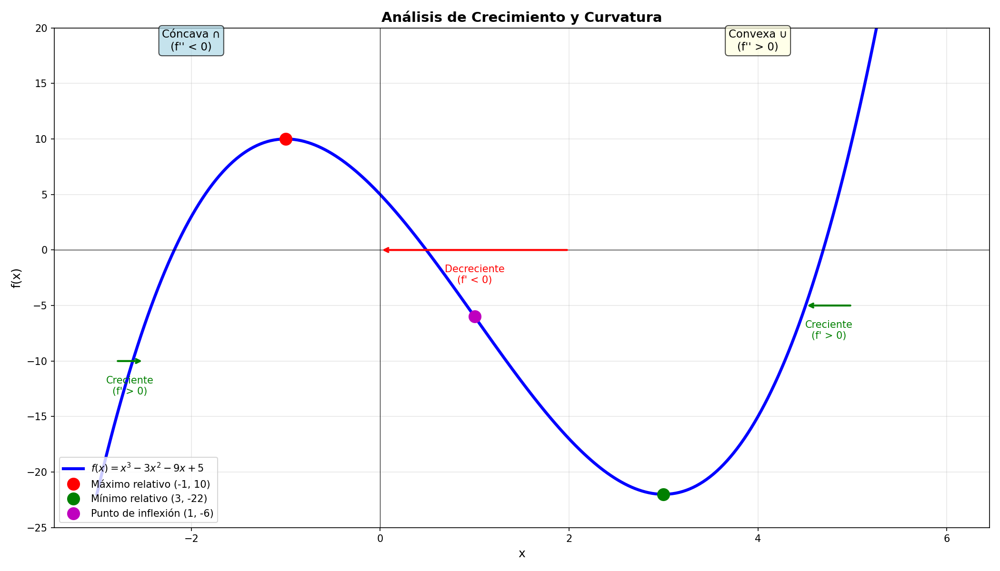
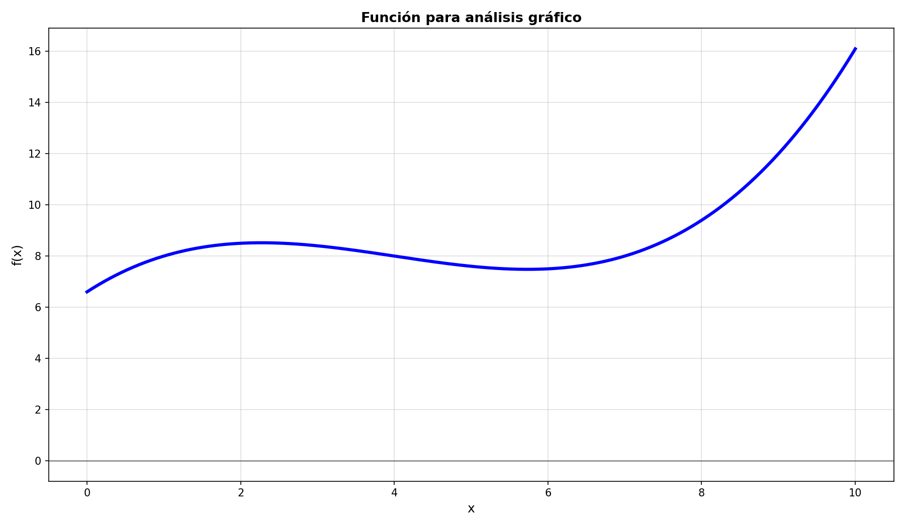

Sea \(f(x)\) una función derivable en un intervalo \(I\):
Un punto crítico \(x = a\) (donde \(f'(a) = 0\)) puede ser:
| Tipo | Condición (Criterio 1ª derivada) |
|---|---|
| Máximo relativo | \(f'(x)\) cambia de + a − al pasar por \(a\) |
| Mínimo relativo | \(f'(x)\) cambia de − a + al pasar por \(a\) |
| Punto de inflexión horizontal | \(f'(x)\) no cambia de signo |
La segunda derivada \(f''(x)\) mide la variación de la pendiente (la curvatura):

Ejercicio 1: Crecimiento y decrecimiento
Dada \(f(x) = x^2 - 4x + 3\), determina dónde crece y dónde decrece.
\(f'(x) = 2x - 4\)
Punto crítico: \(2x - 4 = 0 \Rightarrow x = 2\)
Estudio del signo de \(f'(x)\):
En \(x = 2\) hay un mínimo relativo.
Ejercicio 2: Ocupación hotelera en Vigo
El porcentaje de ocupación hotelera viene dado por \(O(t) = -t^2 + 8t + 20\), donde \(t\) son los meses desde enero.
a) ¿En qué mes se alcanza la ocupación máxima?
b) ¿Cuál es ese valor máximo?
a) \(O'(t) = -2t + 8 = 0 \Rightarrow t = 4\) (abril)
Para confirmar que es máximo: \(O''(t) = -2 < 0\) → Es un máximo.
b) \(O(4) = -16 + 32 + 20 = 36\%\)
Ejercicio 3: Interpretación gráfica
Observando la gráfica de una función \(f\), identifica:
a) Intervalos de crecimiento y decrecimiento
b) Máximos y mínimos
c) Dónde \(f'(x) > 0\), \(f'(x) < 0\) y \(f'(x) = 0\)

Respuesta dependiente de la gráfica proporcionada. Ejemplo genérico:
Ejercicio 4: Demanda de pescado en la lonja
La demanda diaria de pescado (en toneladas) en función del precio viene dada por \(D(p) = 100 - 2p^2\), donde \(p\) es el precio en €/kg.
a) Calcula \(D'(p)\) e interpreta su signo.
b) ¿Para qué precio la demanda es máxima en el intervalo \([0, 5]\)?
a) \(D'(p) = -4p\)
Para \(p > 0\): \(D'(p) < 0\), la demanda siempre decrece (a mayor precio, menor demanda).
b) La demanda es máxima en el extremo inferior: \(p = 0\) → \(D(0) = 100\) toneladas.
(En un contexto real, se buscaría un equilibrio con el precio mínimo viable.)
Ejercicio 5: Análisis completo de una función cúbica
Estudia la función \(f(x) = x^3 - 3x^2 - 9x + 5\):
a) Calcula los puntos críticos.
b) Clasifica los extremos (máximos o mínimos).
c) Determina los intervalos de crecimiento y decrecimiento.
a) \(f'(x) = 3x^2 - 6x - 9 = 3(x^2 - 2x - 3) = 3(x-3)(x+1) = 0\)
Puntos críticos: \(x = -1\) y \(x = 3\)
b) Usando el criterio de la segunda derivada:
\(f''(x) = 6x - 6\)
c) Estudio del signo de \(f'(x) = 3(x+1)(x-3)\):
Ejercicio 6: Identificación de extremos con tabla de signos
Para \(g(x) = -x^4 + 4x^2\), elabora una tabla de signos de \(g'(x)\) y determina los extremos.
\(g'(x) = -4x^3 + 8x = -4x(x^2 - 2) = -4x(x-\sqrt{2})(x+\sqrt{2}) = 0\)
Puntos críticos: \(x = -\sqrt{2}, 0, \sqrt{2}\)
| Intervalo | \((-\infty, -\sqrt{2})\) | \((-\sqrt{2}, 0)\) | \((0, \sqrt{2})\) | \((\sqrt{2}, +\infty)\) |
|---|---|---|---|---|
| Signo \(g'(x)\) | − | + | − | + |
| Monotonía | ↓ | ↑ | ↓ | ↑ |
Conclusión:
Ejercicio 7: Curvatura y puntos de inflexión
Dada \(f(x) = x^3 - 6x^2 + 9x + 1\), determina:
a) Intervalos de convexidad y concavidad
b) Puntos de inflexión
a) \(f'(x) = 3x^2 - 12x + 9\)
\(f''(x) = 6x - 12 = 6(x - 2)\)
Estudio del signo de \(f''(x)\):
b) Punto de inflexión en \(x = 2\) (cambia la curvatura).
\(f(2) = 8 - 24 + 18 + 1 = 3\) → Punto de inflexión: \((2, 3)\)
Ejercicio 8: Tendencia en redes sociales sobre turismo
El número de menciones sobre turismo en Vigo (en miles) sigue el modelo \(M(t) = 5t^3 - 30t^2 + 50t + 10\), donde \(t\) son las semanas.
a) ¿Cuándo el crecimiento de menciones empieza a frenarse? (pista: busca el punto de inflexión)
b) Calcula ese punto e interpreta.
a) El crecimiento se frena cuando la segunda derivada se hace negativa, es decir, en el punto de inflexión.
\(M'(t) = 15t^2 - 60t + 50\)
\(M''(t) = 30t - 60 = 30(t - 2) = 0 \Rightarrow t = 2\) semanas
b) \(M(2) = 5(8) - 30(4) + 50(2) + 10 = 40 - 120 + 100 + 10 = 30\) mil menciones
Interpretación: En la semana 2, el crecimiento pasa de acelerarse a desacelerarse. Antes de la semana 2, cada vez se publicaba más rápido; después, el ritmo de publicación sigue siendo positivo pero cada vez menor.
Ejercicio 9: Análisis de costes
El coste marginal de producción es \(C'(x) = 3x^2 - 12x + 15\). Determina dónde el coste marginal es mínimo.
Para minimizar \(C'(x)\), derivamos de nuevo:
\(C''(x) = 6x - 12 = 0 \Rightarrow x = 2\)
Comprobamos: \(C'''(x) = 6 > 0\) → Es un mínimo.
El coste marginal mínimo se alcanza en \(x = 2\) unidades.
\(C'(2) = 3(4) - 12(2) + 15 = 12 - 24 + 15 = 3\) €/unidad
Contexto: La productividad por hora de un trabajador en un astillero de Vigo viene dada por la función \(P(h) = -h^3 + 9h^2 - 15h + 10\), donde \(h\) son las horas trabajadas en la jornada (desde 0 hasta 8).
Tarea 1: Cálculo de derivadas
Calcula \(P'(h)\) y \(P''(h)\).
\(P'(h) = -3h^2 + 18h - 15\)
\(P''(h) = -6h + 18\)
Tarea 2: Momento de máxima productividad
Determina en qué hora de la jornada el trabajador es más eficiente (máximo de productividad).
Puntos críticos: \(P'(h) = -3h^2 + 18h - 15 = -3(h^2 - 6h + 5) = -3(h-1)(h-5) = 0\)
\(h = 1\) o \(h = 5\)
Clasificación con 2ª derivada:
Conclusión: La productividad es máxima en la hora 5 (a media tarde).
\(P(5) = -125 + 225 - 75 + 10 = 35\) unidades de productividad
Tarea 3: Análisis gráfico completo
Construye una tabla con los intervalos de crecimiento/decrecimiento y curvatura. Representa gráficamente \(P(h)\) e indica:
Tabla resumen:
| Intervalo | \((0,1)\) | \((1,5)\) | \((5,8)\) |
|---|---|---|---|
| \(P'(h)\) | − | + | − |
| Monotonía | Decrece | Crece | Decrece |
Punto de inflexión: \(P''(h) = 0 \Rightarrow -6h + 18 = 0 \Rightarrow h = 3\)
Interpretación: Hasta la hora 3, la productividad aumenta cada vez más rápido (curva hacia arriba). Después de la hora 3, la productividad sigue aumentando hasta la hora 5, pero cada vez más lentamente (curva hacia abajo). El punto de inflexión en \(h=3\) marca el cambio de aceleración a desaceleración.
Tarea 4: Comparación con datos empíricos
Si los datos reales muestran que el trabajador es más eficiente a las 4 horas, ¿qué ajustes habría que hacer al modelo matemático?
Habría que modificar los coeficientes de la función para que el máximo se produzca en \(h = 4\) en lugar de \(h = 5\). Esto podría implicar ajustar el término de segundo grado o usar técnicas de regresión con los datos reales.
Ejercicio 10
Estudia completamente \(f(x) = x^4 - 4x^3\): crecimiento, extremos, curvatura y puntos de inflexión.
\(f'(x) = 4x^3 - 12x^2 = 4x^2(x - 3) = 0 \Rightarrow x = 0, 3\)
Estudio: \(x = 0\) es punto de inflexión horizontal (no cambia monotonía); \(x = 3\) es mínimo.
\(f''(x) = 12x^2 - 24x = 12x(x - 2) = 0 \Rightarrow x = 0, 2\)
Puntos de inflexión en \(x = 0\) y \(x = 2\).
Ejercicio 11
Una empresa tiene ingresos \(I(x) = 80x - x^2\) y costes \(C(x) = 200 + 10x\).
a) Calcula el beneficio \(B(x) = I(x) - C(x)\).
b) ¿Para qué producción el beneficio es máximo?
a) \(B(x) = 80x - x^2 - 200 - 10x = -x^2 + 70x - 200\)
b) \(B'(x) = -2x + 70 = 0 \Rightarrow x = 35\)
\(B''(x) = -2 < 0\) → Es un máximo.
El beneficio máximo se alcanza con \(x = 35\) unidades.
Ejercicio 12
El volumen de ventas de un producto estacional es \(V(t) = 100 + 60\sin(t)\), donde \(t\) está en meses. (Nota: considera \(\sin'(t) = \cos(t)\))
a) ¿Cuándo las ventas crecen más rápidamente?
b) ¿Cuándo dejan de crecer?
a) \(V'(t) = 60\cos(t)\). Las ventas crecen más rápido cuando \(V'(t)\) es máximo, es decir, cuando \(\cos(t) = 1\) → \(t = 0, 2\pi, 4\pi...\) (inicio de año, etc.)
b) Las ventas dejan de crecer cuando \(V'(t) = 0\): \(\cos(t) = 0 \Rightarrow t = \frac{\pi}{2}, \frac{3\pi}{2}...\) (aproximadamente a los 1,5, 4,5, 7,5 meses...)